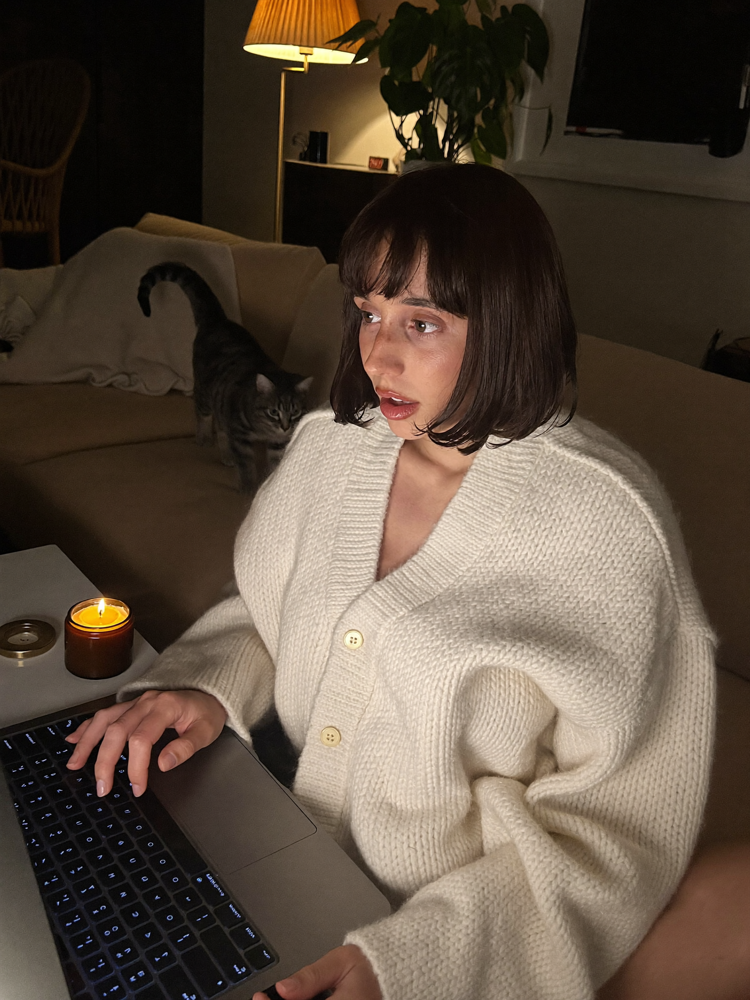
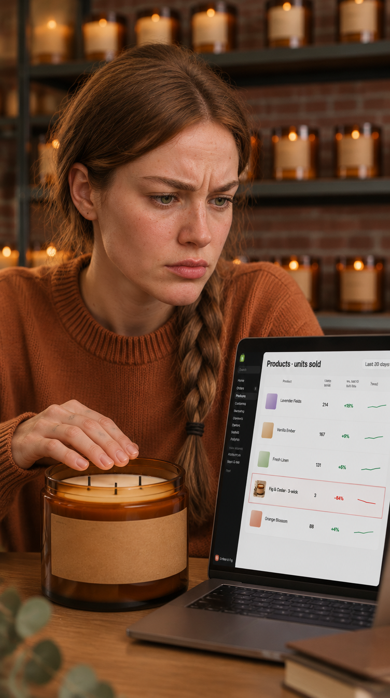
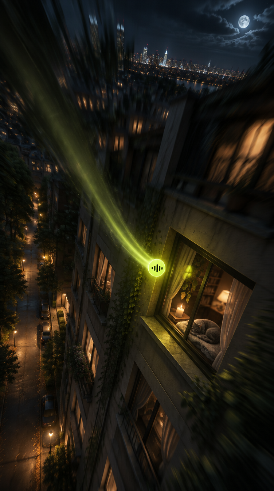

The difference from the other versions: the camera moves come from three real camera-move clips plus one acting-reference clip, one per beat, instead of being described in words.
Only these 15 files are uploaded, in this order, plus the prompt below. Nothing else on this page is sent.
The technique: 3 camera-move clips + 1 acting reference (@Video1-4)
@Video1 · Move 1 Eyes in → Shot 3@Video2 · Move 2 High flip → Shot 6@Video3 · acting reference, The Dip's pace → Shots 7-8@Video4 · Move 4 City flight → Shot 10
Images (@Image1-7)

@Image1 shopper@Image2 her screen@Image3 jar@Image4 owner@Image5 studio
H227 · Seedance 2.5 technique: camera-motion video references (stitched moves)
One answer away
A shopper, her own small candle burning and her cat on the sofa behind her, is one click from buying a new candle, wonders if it's safe for her cat, finds nothing and leaves. One overhead flip later, the owner from The Dip reads three sales as "nobody wants it". We shoot it with four real camera moves borrowed from Higgsfield's viral hits and The Dip's own rhythm, each bound to one beat, so the film moves like an ad people already stop for.
Why this technique fits this story
The story turns on three moves: going into her thoughts, flipping to the other side, and Scout flying back to her. Words describe moves badly; a clip shows them. The guide lists this as its own capability: "Motion reference: references motion and dynamic information from videos ... camera movement" (Prompt guide, Typical multimodal video generation capabilities).
ByteDance's own ad example does exactly this: one image plus six clips, "one per moment", "referring to the motion and camera movement of @Video2", "referring to the impact of @Video3" (Tutorial, Up to 50 omni reference assets, cookie ad, sent with omni_reference_task_type: reference).
When a clip is accurate, "simply state that it should be referenced and avoid repeatedly describing" it (Prompt guide, Reference tasks (multi-asset mapping)), so the prompt names the move and spends its words on the story.
The owner's beat reuses 2.3 s of The Dip itself (her talking face and her hand on the jar), so her pace and acting come from the film Emile loved, not from a description. A clip "do[es] not inherit character identity, clothing, or the entire scene ... by default" (sd25-pe §4), so the final says this clip gives only pace and acting; her face is image4 and her room is image5. For the three viral clips we take only the move.
Input
Text 995 words (sd25-pe final; ours 1,029) · 55 spoken7 images5 videos · 21.8 s total (limit 30)3 audio · 23.5 s total (limit 30)Higgsfield seedance_2_5 · omni_reference · draft · 480p · 9:16 · 30 s · audio onAPI equivalent: omni_reference_task_type: reference90 credits (get_cost quote, one pass)
Reference assets, in upload order
Numbered in the order each subject first appears on screen (Prompt guide FAQ, Incorrect character-to-reference mapping). Every asset has one role and one "do not take" (Tutorial, Prompt rules; sd25-pe §4). No asset is unused. Ka-ching (Emile on H229): one <ka-ching> only, pinned to the first notification ("Added to cart") in Shot 1 at 0-2 s; no chime or ka-ching on the orb anywhere.
<image1>
The shopper
Provides: One job only (Nov 15): the shopper's face, short dark-brown bob with bangs and cream knit cardigan. Her room, the grey tabby and her own small single-wick candle are written in words in the prompt.
Do not take: The room, cat, candle and laptop in the picture (described in words instead); nothing of the owner.
Shared cast, Soul 2 · media 24babbac
<image2>
Her laptop screen
Provides: The Ember & Fig product page: Fig & Cedar, $38.00, Add to cart. Exact words and layout, and no word about pets (that is the point).
Do not take: Used only as the screen; not as a room or style.
Shared cast, HTML screenshot · media 527991c0
<image3>
The Fig & Cedar jar
Provides: The product: a wide amber three-wick jar labelled "Fig & Cedar", as in The Dip. Its one role: the jar on the owner's desk. The shopper's screen is defined by image2 alone.
Do not take: The linen behind it.
GPT Image 2.6 edit of the shared-cast jar (label added, round 2) · job ae311108
<image4>
The owner (actress 14)
Provides: Her face, auburn side braid, rust knit sweater: the woman from The Dip.
Do not take: The brick wall and coffee machine behind her (Seedance copies a face image's room).
The Dip's own face ref · media 1963a66d
<image5>
Her studio
Provides: The Dip's room, empty: dark metal shelves of lit amber jars, red brick wall, light wooden desk, warm light. One room reference for every owner shot.
Do not take: Any person or screen (there are none now).
GPT Image 2.6 clean-up of The Dip frame at 2.6 s (round 2, job aa3455ec); H227 fix 1: the lit blank-label jar in the right foreground painted out locally (ffmpeg patch from the same shelf and desk), so the desk is empty · media 1992f753
<image6>
Her laptop screen
Provides: Products page, Fig & Cedar row in red: 3 units, falling.
Do not take: Used only as the screen.
Shared cast, HTML screenshot · media 8c33aad5
<image7>
Scout's orb
Provides: The lime disc with five dark sound bars, for Scout's orb in Shots 9, 10 and 12. The end-screen wordmark comes only from video5.
Do not take: The wordmark letters or the black background, ever (the wordmark comes from video5 alone).
one-take-kit/refs · media 67fba5cb
<video1>
Move 1 · Eyes in (5 s)
Provides: Shot 3 only: a steady push from the face into one eye until the pupil fills the frame. This is how we enter her thoughts.
Do not take: Her (the street model), the street, her clothes and colours.
Provides: Shots 7-8: the owner's acting and rhythm, quick cuts between her talking face and her hand on the jar. Pace and acting only; her face comes from image4 and her room from image5.
Do not take: Its face, clothes, room or candles (the clip still shows The Dip's shelves of lit jars behind her).
H227 fix 1: re-cut of The Dip (H174) clip to face and hand frames only (0-1.6 s wide face, 1.6-2.05 s close face, 4.38-4.54 s hand on jar, 4.84-5.0 s face), cropped and, in H227 fix 2, re-exported at 640×800 (512,000 px; Seedance 2.5 needs at least 407,696 total pixels for a reference video). No analytics screen, no EXAMPLE pill, no "Fig & Celder" label. Sound removed · media b2b7244b (old 7868f552)
<video4>
Move 4 · City flight (5 s)
Provides: Shot 10 only: one unbroken flight over a city and a steep dive to street level. The orb follows this path from her studio to the shopper's window.
Do not take: Its people, places or daylight. The clip stays in daylight from start to end (no dusk in it, checked frame by frame on Nov 15), so the prompt takes only its path and writes the city at night.
Provides: Shot 12 (26-30 s) exactly, picture, words and audio, line written into the prompt. One role only: Scout's voice in Shots 9-11 now comes from audio3.
Do not take: Nothing to leave out.
H158 end screen · media cae62718
<audio1>
Shopper's voice (9 s)
Provides: Timbre, pace and calm mood for her inner voice.
Do not take: Its words.
Serene, from H215, trimmed to 9 s · media cf1289fd
<audio2>
Owner's voice (10 s)
Provides: Alexandra, The Dip's owner voice: timbre, pace, warm and dry mood.
Do not take: Its words.
one-take-kit/refs/voice-alexandra.mp3 trimmed to 10 s · media 54c5f7bf
<audio3>
Scout's voice (4.5 s)
Provides: Scout's voice timbre for Shots 9-11 ("Don't guess.", "Ask them.", "They'll tell you why.").
Do not take: Its words (they are the end-screen line).
H227 fix 1: the soundtrack of video5 (H158 end screen), extracted with ffmpeg · media cd435499
The exact prompt (send this one)
Built on sd25-pe's "Generation with Reference Assets" template. Ratio and duration stay out of the prompt (sd25-pe principle 7). The refs are shorter than the 30 s output, so the compatibility gate adds "Please note that this is not video editing." (sd25-pe §6), which also keeps words like "continue" or "replace" from routing it to editing or extension (Tutorial, Task types and constraints).
Nov 15 sd25-pe check: this is the sd25-pe final, the one prompt to send. Every shot names who is in it with her image (the shopper @Image1, the owner @Image4, Scout @Image7), each image has one job, and each move is named in the shot where it happens (Move 1 eyes in @Video1 in Shot 3, Move 2 high flip @Video2 in Shot 6, the acting reference (The Dip's pace) @Video3 in Shots 7-8, Move 4 city flight @Video4 in Shot 10). Item-by-item check: SD25-CHECK.md. Our older hand-written version is kept below for history only.
【Generation Goal】
Generate a realistic story ad in two homes for Ember & Fig, a small candle brand: a shopper drops the Fig & Cedar candle because the page doesn't say if it is safe for her cat; the owner reads the slow sales as nobody wanting it, until Scout, a glowing lime orb, stops her. Please note that this is not video editing.
【Reference Asset Roles】
@Image1 is the shopper: only her face, dark-brown bob with bangs and cream cardigan; not the room, cat, candle or laptop.
@Image2 is only the shopper's laptop screen (Shots 1, 4): the product page; copy its layout and words.
@Image3 is only the Fig & Cedar jar: wide amber, three wicks, kraft label "Fig & Cedar"; not the linen.
@Image4 is the owner: only her face, auburn side braid and rust sweater; not the background.
@Image5 is only the owner's studio: shelves of lit jars, brick wall, empty desk.
@Image6 is only the owner's laptop screen (Shot 7): her sales page; copy its layout and words.
@Image7 is Scout: only the lime disc with five dark bars, as a glowing orb; not the lettering or black background.
@Video1 is Move 1, eyes in: only the camera move of Shot 3; not its people, places or colours.
@Video2 is Move 2, high flip: only the camera move of Shot 6; not its people, places or colours.
@Video3 is the acting reference: only the cutting pace between the owner's face and her hand on the jar in Shots 7-8; not its face, smile, clothes, room or candles.
@Video4 is Move 4, city flight: only the camera path of Shot 10; not its people, places or daylight.
@Video5 is only the end screen of Shot 12: reproduce its picture, words and audio exactly.
@Audio1 is only the shopper's voice timbre and calm mood; not its words.
@Audio2 is only the owner's voice timbre and warm, dry mood; not its words.
@Audio3 is only Scout's voice timbre in Shots 9-11; not its words.
【Subjects and Relationships】
Exactly two women, never in the same frame. The shopper (@Image1) is only in her night living room: sofa, warm floor lamp, a grey tabby cat, her own small single-wick candle beside her laptop. The owner (@Image4) is only in her studio (@Image5). The one Fig & Cedar jar (@Image3) is on the owner's desk. Scout (@Image7) is one orb.
【Event Script】
Shot 1, 0-2 s: The shopper (@Image1) clicks "Add to cart" on @Image2; an "Added to cart" notification slides in <ka-ching>. The shopper's inner voice (@Audio1), in English, pleased, lips closed: {Mm. Fig and Cedar. Perfect.} Ends on the notification.
Shot 2, 2-4 s: medium on the shopper (@Image1). The cat walks along the sofa behind her; then she glances at it. Inner voice (@Audio1), in English, catching herself, lips closed: {Wait.} Ends on her glance.
Shot 3, 4-7 s: Move 1, eyes in (@Video1): a steady push into the shopper's (@Image1) eye. Inner voice (@Audio1), in English, unsure, lips closed: {Is this one safe for my cat?} Ends close on her eye.
Shot 4, 7-9 s: close on the shopper's (@Image1) laptop: she scrolls @Image2; nothing about pets. Inner voice (@Audio1), in English, deflating, lips closed: {It doesn't say anywhere.} Ends on the page.
Shot 5, 9-11 s: the shopper (@Image1) closes the laptop <soft laptop click>; the cat settles behind her. Inner voice (@Audio1), in English, small sigh, lips closed: {Guess not.} Ends with the laptop closed, unbought.
Shot 6, 11-13 s: Move 2, high flip (@Video2): the camera rises from the shopper (@Image1), flips overhead <whoosh> and ends on the owner (@Image4) at her desk in the bright studio (@Image5).
Shot 7, 13-17 s: with the acting reference (@Video3): close on the owner (@Image4), one hand on the jar (@Image3); her laptop shows @Image6. She reads the red row, then frowns. The owner (@Audio2), on screen, in English, puzzled, dry: {Huh. Three sold? I thought Fig and Cedar would sell more.} Ends on her frown.
Shot 8, 17-20 s: with @Video3's pace: the owner (@Image4), her face in frame, lifts the jar (@Image3) toward a cardboard box on the floor marked "CLEARANCE". The owner (@Audio2), in English, resigned, small shrug: {Guess nobody wants it. I'm discontinuing it.} Ends with the jar above the box.
Shot 9, 20-22 s: Scout (@Image7) pops out of her laptop and hovers at eye level; then the owner (@Image4) freezes, jar above the box, mouth closed. Scout (@Audio3), in English, calm, friendly: {Don't guess.} Ends with the orb before her face.
Shot 10, 22-24 s: Move 4, city flight (@Video4): Scout (@Image7) flies over the city at night and dives to the shopper's lit window. Scout (@Audio3), in English, warm: {Ask them.} Ends at her window.
Shot 11, 24-26 s: the owner (@Image4) at her desk: her laptop shows a Scout interview card with the shopper's answer, "Wasn't sure it's safe for my cat." She reads it, then sets the jar (@Image3) back on the desk and smiles, mouth closed. Scout (@Audio3), in English, warm, off screen: {They'll tell you why.} Ends with the jar on her desk.
Shot 12, 26-30 s: Scout (@Image7) becomes the "o" of the Scout wordmark, exactly like @Video5. Scout, in English, calm, from the talking "o": {Scout interviews your shoppers for you. Get free early access.} Ends on @Video5's end screen.
【Sound and Text】
Quiet night room tone <a candle's faint crackle> at the shopper's. (A soft, warm music bed, lifting at the end.) One ka-ching only, in Shot 1; no sound on the orb. Each line ends inside its shot. No subtitles. No on-screen text except @Image2, @Image6, @Video5, "Added to cart", "CLEARANCE" and the Shot 11 card.
【Maintain Consistency】
Hard cuts every 2-3 seconds, except the continuous moves of Shots 3, 6 and 10. Never swap the two women. Keep each woman, the grey tabby, the one jar (@Image3) and the one orb identical; the homes stay separate.
Key: {dialogue} · <sound effect> · (music) (Tutorial, Prompt rules). Inner voice written as "V.O., lips closed" like the guide's own example (FAQ, Incorrect character-to-reference mapping, Shot 2). Lines as "Character (emotion): {line}" to keep subtitles away (FAQ, Subtitles generated despite prompt constraints). Negative wording only for subtitles (Prompt guide, Negative control) and in each asset's "do not use" (Tutorial, Prompt rules).
Shot list
Time (s)
Shot size
Angle
Movement
Transition
Sound
Line
Inspiration
0-2
Close-up
Over her hand
Locked
Cut
<ka-ching> on the "Added to cart" notification (the only ka-ching), night room tone
Shopper V.O.: Mm. Fig and Cedar. Perfect.
Product page image2; the shopper's face from image1; her own small candle in words
2-4
Medium
Eye level, sofa
Locked
Hard cut
Night room tone
Shopper V.O.: Wait.
Cat walks the sofa back behind her, then she glances: cause before reaction (sd25-pe §1)
Scout (off screen; her mouth closed): They'll tell you why.
The payoff: her laptop shows a Scout interview card with the shopper's answer, "Wasn't sure it's safe for my cat."; she sets the jar back on the desk
26-30
Full frame
Flat
As the ref
Orb becomes the 'o'
End-screen audio
Scout: Scout interviews your shoppers for you. Get free early access.
H158 end screen · video5 (speech 0.2-4.15 s fits the 4 s slot)
Pace: the longest line runs 11 words in 4 s (2.75 words/s, under the 3 words/s limit); the end line is 10 words in 4 s (the end screen speaks 0.2-4.15 s). Each line finishes inside its shot. Integer-second timestamps with no gaps (Prompt guide, Timestamps). The three moves are the only shots that are not hard cuts, and the prompt names them as the exceptions.
The stitched moves reel (illustration, not sent to Seedance)
Press play
Reel cut at round-1 timing (shopper side 0-13 s became 0-11 s in round 2; no re-cut needed to judge the moves).
This is the film's skeleton at true timing: the four borrowed moves trimmed with ffmpeg and dropped onto their beats, the gaps filled with the cast stills. It is not the film; it shows Seedance where each move lands and how fast the whole thing breathes. Made locally for free; no video was generated.
Each move was cut to its useful part and its sound removed, so Seedance takes only the camera from it. Higgsfield charges the same 90 credits with or without these clips (quoted). On BytePlus direct, video input costs more: input plus output seconds are billed at the lower with-video rate (Model pricing, Billing rules).
Move 1 · Eyes in → shot 3Move 2 · High flip → shot 6Acting reference · The Dip's pace → shots 7-8Move 4 · City flight → shot 10
Draft stills: Illustration, not sent to Seedance
Illustration, not sent to Seedance. Round 1 still, superseded: the cat came forward to the flame. Round 2 keeps it on the sofa behind her, as image1 already shows.

Illustration, not sent to Seedance. Shot 7: actress 14, hand on the jar, the red row. (This still drew a brick wall; the film uses The Dip's room from image5 and video3.)

Illustration, not sent to Seedance. Shot 10: the orb dives to her lit window.
Risks and what a second pass would cost
High flip squeeze. A 5 s clip drives a 2 s slot. If Seedance stretches the flip and eats the owner's first line, cut that 4-5 s piece out and fix it with a video edit (about 3.5 credits a second, so about 18 credits) instead of a new 90-credit take.
Prompt length. The Nov 15 final is 997 words, inside the API guide's 1,000-word recommendation (create-video-generation-task-api, Tip: "no more than ... 1,000 English words").
The Dip leaking in: closed in the assets. H227 fix 1 re-cut video3 to her face and her hand only, and painted the lit jar off image5's desk, so no "do not use" line has to hold back a screen, a label or a second jar.
Two short on-screen texts. "CLEARANCE" on the box (Shot 8) and the interview card's answer "Wasn't sure it's safe for my cat." (Shot 11) are not in any reference image, so Seedance may misspell them. If so, fix that 2 s piece with an edit rather than a new pass.
Budget. One draft pass = 90 credits. Worst case with two piece-edits ≈ 126 credits. Spent so far: 1.25 credits (5 GPT stills: 3 in round 1, 2 in round 2). No video generated.
History (Nov 14): ours vs ByteDance's sd25-pe
History. The text below records the Nov 14 compile. The prompt to send is the Nov 15 final shown at the top of the page and in the right-hand column here.
H227 round: this time the real sd25-pe skill loaded through the Skill tool and its self-update ran. I compiled our prompt with it against the actual assets (every image, 1 frame a second of every clip, and a transcript of every audio track and of the end screen's voice). Saved as prompt-sd25pe-final.txt. The earlier by-hand compile is retired.
Which to send: the sd25-pe final. It is the same film, with every spoken line word for word and the same technique (three stitched camera-move clips, The Dip's pace clip, the end screen), and it closes three leaks ours left open:
A second jar on the owner's desk. The studio still (@Image5) has a lit, blank-label candle on its desk. Ours said "use only the room", which still leaves that candle in play next to the Fig & Cedar jar. The final fenced it with "Do not use the blank-label candle on its desk". H227 fix 1: the candle is now painted out of the still, so that line is gone.
The Dip's candle.@Video3 shows its own lit jar. The final fenced it off with words. H227 fix 1: the clip is re-cut to her face and hand only, so it needs no fence.
The end screen's words leaking into Shots 9-10.@Video5 says "Scout interviews your shoppers for you. Get free early access." (Deepgram transcript, an exact match for Shot 11). Ours made it Scout's voice in Shots 9-10 without fencing its words. The final: "In Shots 9-10 it gives only Scout's voice timbre; do not use its words there." H227 fix 1: that still gave @Video5 two roles, so Scout's voice for Shots 9-11 now comes from its own clip, @Audio3, and @Video5 is only the end screen.
It also adds the skill's standard lines: the speaker and "in English" on every line, "her lips closed" on all 5 inner-voice lines, cause before reaction ("First the grey tabby walks… then she glances", "After she reads the red row, she frowns", "then she freezes"), end states (laptop closed and no purchase, jar in hand above the clearance box, end screen holds) and the one jar named in 【Maintain Consistency】. It was 155 words longer (1011 → 1166). History: this section describes the Nov 14 compile; the Nov 15 sd25-pe check rewrote and tightened it to 995 words (see SD25-CHECK.md).
Check (sd25-pe Final Checklist)
Ours
sd25-pe final
Spoken lines, word for word (script diff)
10 lines, 55 words
Identical, 10 of 10
Technique: moves bound to Shots 3, 6, 10; named hard-cut exceptions
Yes
Yes, unchanged
One primary task; gate line once (refs 4.5-5 s vs 30 s output)
Yes
Yes
Every asset: one role + what not to take; unused listed
15 of 15
15 of 15, one role each (video5 end screen only, audio3 Scout's voice); no unused assets, so no 【Unused Assets】 block
Speaker + language on every line; listeners' mouths closed
"lips closed" on 3 of 5 inner-voice lines
On all 5; owner's mouth closed in Shot 9
() music, <> sound effects, {} dialogue; no subtitles
Yes
Yes
No ratio, duration, resolution or sound toggle in the text
Ours, retired (1029 words) · history only, not sent
【Generation Goal】
A realistic story ad in two homes for Ember & Fig, a small candle brand. At night a shopper drops the Fig & Cedar candle she was about to buy because the page doesn't say if it is safe for her cat; the owner reads the slow sales as nobody wanting it and decides to drop it, until Scout, a glowing lime orb, stops her. Please note that this is not video editing.
【Reference Asset Roles】
@Image1 is the shopper: her face, short dark-brown bob with bangs and cream knit cardigan.
@Image1 is also her night living room (sofa, warm lamp), her own small single-wick candle beside her laptop, and her grey tabby cat.
@Image2 is what her laptop screen shows: the Ember & Fig product page for Fig & Cedar, $38.00, "Add to cart". Copy its layout and words exactly; do not use it for anything else.
@Image3 is the Fig & Cedar jar on the owner's desk: a wide amber three-wick jar with a kraft label reading "Fig & Cedar".
@Image4 is the owner: use only her face, auburn side braid and rust knit sweater; do not use the background of this image.
@Image5 is the owner's candle studio: dark metal shelves of lit amber jars, red brick wall, empty light wooden desk, warm light. Use only the room.
@Image6 is what the owner's laptop screen shows: her Products page, the Fig & Cedar row outlined in red, 3 units. Copy its layout; do not use it for anything else.
@Image7 is Scout: use only the lime disc with five dark sound bars, as a glowing orb; no wordmark letters before Shot 12.
@Video1 is the camera move only for Shot 3; do not use its people, places or colours.
@Video2 is the camera move only for Shot 6; do not use its people, places or colours.
@Video3 is the owner's pace and acting for Shots 7-8: quick cuts between her talking face and her hand on the jar. Do not use its words.
@Video4 is the camera path and bright-to-dusk light change only for Shot 10; do not use its people or places.
@Video5 is the end screen for Shot 12: reproduce it exactly, picture, words and audio.
@Audio1 is the shopper's voice timbre and calm mood only; do not reuse its words.
@Audio2 is the owner's voice timbre and warm, dry mood only; do not reuse its words.
@Audio3 is Scout's voice timbre only, for Shots 9-11; do not reuse its words.
【Subjects and Relationships】
Exactly two women, never in the same shot: the shopper only in her living room at night; the owner only in her studio. The shopper sees the product only on her screen, as @Image2 shows it; the one Fig & Cedar jar from @Image3 is on the owner's desk. The cat stays in the background of the shopper's home.
【Event Script】
Shot 1, 0-2 s: macro at night by candlelight. The shopper (@Image1) is on her sofa; her fingertip clicks "Add to cart" on @Image2; a small "Added to cart" notification slides in <ka-ching>. Shopper (V.O., English, lips closed, pleased): {Mm. Fig and Cedar. Perfect.}
Shot 2, 2-4 s: medium on the shopper (@Image1) on the sofa, about to check out. Behind her, the grey tabby walks along the back of the sofa; she glances at it. Shopper (V.O., English, lips closed, catching herself): {Wait.}
Shot 3, 4-7 s: camera move from @Video1 (Move 1, eyes in): a steady push into the shopper's (@Image1) face and eye as she stares at the screen. Shopper (V.O., English, lips closed, unsure): {Is this one safe for my cat?}
Shot 4, 7-9 s: close on the laptop: she scrolls the product page; nothing about pets. Shopper (V.O., English, deflating): {It doesn't say anywhere.}
Shot 5, 9-11 s: her hand leaves the trackpad and closes the laptop <soft laptop click>; the cat settles on the sofa behind her. Shopper (V.O., English, a small sigh): {Guess not.}
Shot 6, 11-13 s: camera move from @Video2 (Move 2, high flip): the camera rises, flips overhead and lands, from her dark room <whoosh> into the owner's bright studio.
Shot 7, 13-17 s: close on the owner (@Image4) at her desk, one hand on the Fig & Cedar jar; her laptop shows @Image6. She frowns. Owner (English, puzzled, dry): {Huh. Three sold? I thought Fig and Cedar would sell more.}
Shot 8, 17-20 s: on her hands lifting the jar off the desk toward a cardboard box on the floor marked "CLEARANCE". Owner (English, resigned, a small shrug): {Guess nobody wants it. I'm discontinuing it.}
Shot 9, 20-22 s: the lime orb pops out of her laptop screen and hovers at her eye level; she freezes with the jar still in her hand above the clearance box, mouth closed. Scout (English, calm, friendly): {Don't guess.}
Shot 10, 22-24 s: camera path from @Video4 (Move 4, city flight): the orb flies over the city and dives toward the shopper's lit window. Scout (English, warm): {Ask them.}
Shot 11, 24-26 s: back on the owner at her desk: her laptop shows one new message from the shopper in large type, "Is it safe for my cat?". She reads it, lowers the jar back onto her desk and smiles, mouth closed. Scout (English, warm, off screen): {They'll tell you why.}
Shot 12, 26-30 s: the orb becomes the "o" of the Scout wordmark, exactly like @Video5. Scout (English, calm, from the talking "o"): {Scout interviews your shoppers for you. Get free early access.}
【Sound and Text】
Shopper's home: quiet night room tone <a candle's faint crackle>; her lines are her inner voice and her lips stay closed. Owner's studio: brighter room tone. (A soft, warm music bed under everything, lifting at the flip and at the end.) One ka-ching only, on the Shot 1 notification; never a chime or ka-ching on the orb. Each line finishes inside its own shot. No subtitles. No on-screen text except what @Image2, @Image6 and @Video5 show, "Added to cart" in Shot 1, "CLEARANCE" on the box in Shot 8 and the shopper's one-line message in Shot 11.
【Maintain Consistency】
Hard cuts, a new visual every 2-3 seconds, except Shots 3, 6 and 10, which are single continuous moves. Keep each woman's face, hair and clothes identical in every shot, the cat a grey tabby, and the Fig & Cedar jar identical to @Image3.
sd25-pe final, Nov 15 check (995 words) · send this one
【Generation Goal】
Generate a realistic story ad in two homes for Ember & Fig, a small candle brand: a shopper drops the Fig & Cedar candle because the page doesn't say if it is safe for her cat; the owner reads the slow sales as nobody wanting it, until Scout, a glowing lime orb, stops her. Please note that this is not video editing.
【Reference Asset Roles】
@Image1 is the shopper: only her face, dark-brown bob with bangs and cream cardigan; not the room, cat, candle or laptop.
@Image2 is only the shopper's laptop screen (Shots 1, 4): the product page; copy its layout and words.
@Image3 is only the Fig & Cedar jar: wide amber, three wicks, kraft label "Fig & Cedar"; not the linen.
@Image4 is the owner: only her face, auburn side braid and rust sweater; not the background.
@Image5 is only the owner's studio: shelves of lit jars, brick wall, empty desk.
@Image6 is only the owner's laptop screen (Shot 7): her sales page; copy its layout and words.
@Image7 is Scout: only the lime disc with five dark bars, as a glowing orb; not the lettering or black background.
@Video1 is Move 1, eyes in: only the camera move of Shot 3; not its people, places or colours.
@Video2 is Move 2, high flip: only the camera move of Shot 6; not its people, places or colours.
@Video3 is the acting reference: only the cutting pace between the owner's face and her hand on the jar in Shots 7-8; not its face, smile, clothes, room or candles.
@Video4 is Move 4, city flight: only the camera path of Shot 10; not its people, places or daylight.
@Video5 is only the end screen of Shot 12: reproduce its picture, words and audio exactly.
@Audio1 is only the shopper's voice timbre and calm mood; not its words.
@Audio2 is only the owner's voice timbre and warm, dry mood; not its words.
@Audio3 is only Scout's voice timbre in Shots 9-11; not its words.
【Subjects and Relationships】
Exactly two women, never in the same frame. The shopper (@Image1) is only in her night living room: sofa, warm floor lamp, a grey tabby cat, her own small single-wick candle beside her laptop. The owner (@Image4) is only in her studio (@Image5). The one Fig & Cedar jar (@Image3) is on the owner's desk. Scout (@Image7) is one orb.
【Event Script】
Shot 1, 0-2 s: The shopper (@Image1) clicks "Add to cart" on @Image2; an "Added to cart" notification slides in <ka-ching>. The shopper's inner voice (@Audio1), in English, pleased, lips closed: {Mm. Fig and Cedar. Perfect.} Ends on the notification.
Shot 2, 2-4 s: medium on the shopper (@Image1). The cat walks along the sofa behind her; then she glances at it. Inner voice (@Audio1), in English, catching herself, lips closed: {Wait.} Ends on her glance.
Shot 3, 4-7 s: Move 1, eyes in (@Video1): a steady push into the shopper's (@Image1) eye. Inner voice (@Audio1), in English, unsure, lips closed: {Is this one safe for my cat?} Ends close on her eye.
Shot 4, 7-9 s: close on the shopper's (@Image1) laptop: she scrolls @Image2; nothing about pets. Inner voice (@Audio1), in English, deflating, lips closed: {It doesn't say anywhere.} Ends on the page.
Shot 5, 9-11 s: the shopper (@Image1) closes the laptop <soft laptop click>; the cat settles behind her. Inner voice (@Audio1), in English, small sigh, lips closed: {Guess not.} Ends with the laptop closed, unbought.
Shot 6, 11-13 s: Move 2, high flip (@Video2): the camera rises from the shopper (@Image1), flips overhead <whoosh> and ends on the owner (@Image4) at her desk in the bright studio (@Image5).
Shot 7, 13-17 s: with the acting reference (@Video3): close on the owner (@Image4), one hand on the jar (@Image3); her laptop shows @Image6. She reads the red row, then frowns. The owner (@Audio2), on screen, in English, puzzled, dry: {Huh. Three sold? I thought Fig and Cedar would sell more.} Ends on her frown.
Shot 8, 17-20 s: with @Video3's pace: the owner (@Image4), her face in frame, lifts the jar (@Image3) toward a cardboard box on the floor marked "CLEARANCE". The owner (@Audio2), in English, resigned, small shrug: {Guess nobody wants it. I'm discontinuing it.} Ends with the jar above the box.
Shot 9, 20-22 s: Scout (@Image7) pops out of her laptop and hovers at eye level; then the owner (@Image4) freezes, jar above the box, mouth closed. Scout (@Audio3), in English, calm, friendly: {Don't guess.} Ends with the orb before her face.
Shot 10, 22-24 s: Move 4, city flight (@Video4): Scout (@Image7) flies over the city at night and dives to the shopper's lit window. Scout (@Audio3), in English, warm: {Ask them.} Ends at her window.
Shot 11, 24-26 s: the owner (@Image4) at her desk: her laptop shows a Scout interview card with the shopper's answer, "Wasn't sure it's safe for my cat." She reads it, then sets the jar (@Image3) back on the desk and smiles, mouth closed. Scout (@Audio3), in English, warm, off screen: {They'll tell you why.} Ends with the jar on her desk.
Shot 12, 26-30 s: Scout (@Image7) becomes the "o" of the Scout wordmark, exactly like @Video5. Scout, in English, calm, from the talking "o": {Scout interviews your shoppers for you. Get free early access.} Ends on @Video5's end screen.
【Sound and Text】
Quiet night room tone <a candle's faint crackle> at the shopper's. (A soft, warm music bed, lifting at the end.) One ka-ching only, in Shot 1; no sound on the orb. Each line ends inside its shot. No subtitles. No on-screen text except @Image2, @Image6, @Video5, "Added to cart", "CLEARANCE" and the Shot 11 card.
【Maintain Consistency】
Hard cuts every 2-3 seconds, except the continuous moves of Shots 3, 6 and 10. Never swap the two women. Keep each woman, the grey tabby, the one jar (@Image3) and the one orb identical; the homes stay separate.
Eval
Current status: Nov 15 sd25-pe check. ByteDance's sd25-pe skill read in full and run item by item on the final prompt and every asset: SD25-CHECK.md (pass 1 FAILs, fixes, pass 2 with zero FAILs). Older status notes below are history.
Earlier: H227 fix 2. Independent check 2 scored the fix-1 version FAIL (feedback 6 · Seedance 6 · story 7). All 9 of its fixes are applied below. This version has not been re-scored yet.
Check 2 fix
What changed
video3 was 480×600 (288,000 px), below the 407,696 px minimum
Re-exported at 640×800 (512,000 px), same 0.8 ratio, uploaded as media b2b7244b.
Emile's H229 ka-ching rule missing
One <ka-ching> in Shot 1 (0-2 s) on the first notification, "Added to cart", and nowhere else. Both prompts say no chime or ka-ching on the orb. The page line that overrode the rule is gone.
@Image7 "before Shot 11"
Now "before Shot 12"; the image7 card says Shots 9-10, then the morph in Shot 12.
Owner could lip-sync Scout in Shot 11
"her mouth closed", and Scout is "off screen".
@Image1 gave five entities on one line
Split into four one-subject lines: shopper, living room, cat, her own candle.
Shot 10 packed four changes into 2 s
Now only the flight and the dive, ending at her lit window. The phone beat is dropped.
@Video4 page vs prompt clash
The prompt line now keeps "its camera path and its bright-to-dusk light change"; the card matches.
Stale page copy
The 5 s Dip copy, the old ref totals and the 22-25 timing are fixed (below), and this block marks which status is current.
job-plan.json had three "NEEDS NEW UPLOAD" entries
All uploaded (free): image5 1992f753, video3 b2b7244b, audio3 cd435499.
Earlier: H227 fix 1 (check 1 scored the version before it PASS, feedback 8 · Seedance 7 · story 7). Every recommended fix was applied:
Fix
What changed
@Video5 had two roles
@Video5 is only the end screen (Shot 12). New audio3, cut from its soundtrack, is Scout's voice timbre in Shots 9-11.
image5's lit blank-label jar
Painted out; the desk is empty. The "do not use the blank-label candle" clause is gone.
video3's EXAMPLE pill, analytics screen, "Fig & Celder" label
Re-cut to face and hand frames only (2.3 s). Its fence clause is gone.
Wireless mouse vs image1's trackpad
Shots 1 and 5 now say trackpad.
@Image3 "the product on the shopper's screen" vs image2's blank jar
Claim dropped: @Image3 is the jar on the owner's desk; the screen is image2 alone.
Kraft mailer read as shipping an order
Shot 8: toward a box marked "CLEARANCE".
"They'll tell you why" never paid off
New Shot 11 (24-26 s): her laptop shows the shopper's message "Is it safe for my cat?", she sets the jar back. Shot 10 is 22-24 s, the end screen 26-30 s. Same 10 lines, 55 words.
Header said H216 · Team D
Now H227.
Also: the shot list no longer ties a chime to the orb (Emile on H229: never tie a chime or ka-ching to the orb). Changed assets image5, video3 and new audio3 were uploaded in fix 2; nothing paid was run.
Independent judge, round 1 (before): goal 8 · guide 7 · story 6.5 · craft 7.5 · overall 7. Verdict: "Close, but not ready to render."
Must fix
What I changed
The shopper already burns the Fig & Cedar jar she's debating buying.
Her lit candle is now her own small single-wick candle from image1. image3 is "the Fig & Cedar jar on the owner's desk; it is the product on the shopper's screen". 【Subjects】: the jar exists only on her screen and on the owner's desk.
The cat comes forward and sniffs the open flame.
Shot 2: "Behind her, the grey tabby walks along the back of the sofa; she glances at it." Shot 5: "the cat settles on the sofa behind her." Shot 10 no longer has the cat. The round-1 cat still is marked as superseded.
Shot 9 is 1 s, and "Wait." repeats the shopper's word.
Re-timed the whole film: shopper 0-11 s (eye push 4-7, page 7-9, gives up 9-11), flip 11-13, owner 13-17 and 17-20, Shot 9 20-22 with Scout saying only {Don't guess.}, Shot 10 22-25 (now 22-24 after fix 1).
Shot 11 is 4 s for a 4.5 s end screen, and its line is missing from the ledger.
Shot 11 is 25-30 s (5 s). Line written: Scout (English, calm, from the talking "o"): {Scout interviews your shoppers for you. Get free early access.} Ledger: 10 lines, 55 words.
"vertical" in the goal.
"A realistic story ad in two homes for Ember & Fig". 9:16 lives only in the settings.
Nice-to-have, also done: the move clips are now one line each ("camera move only for Shot N; do not use its people, places or colours") and the shots no longer describe the moves again. Clicks and crackle use <>. Shot 8 was "off the desk toward an open kraft mailer" (H227 fix 1: now a box marked "CLEARANCE"). The jar is labelled "Fig & Cedar" to match The Dip (new image3). "English" is on each speaker, not a blanket line. image5 is now a clean 752×1344 empty studio with no owner, analytics or notification cards. "skater" is dropped, and the day-into-night flight is stated on purpose. Cost: 2 GPT Image stills, 0.5 credits.
Verdict: ready for one 90-credit draft pass on Emile's go. Every must-fix is resolved, the timeline is gapless whole seconds with each line inside its shot, the refs now total 21.8 s of video and 23.5 s of audio (after fix 1), and the prompt passes the sd25-pe checklist. Open risk: the 5 s High flip clip driving a 2 s slot (fix: an edit of about 18 credits). This round-1 verdict is superseded by the current status at the top of this section.